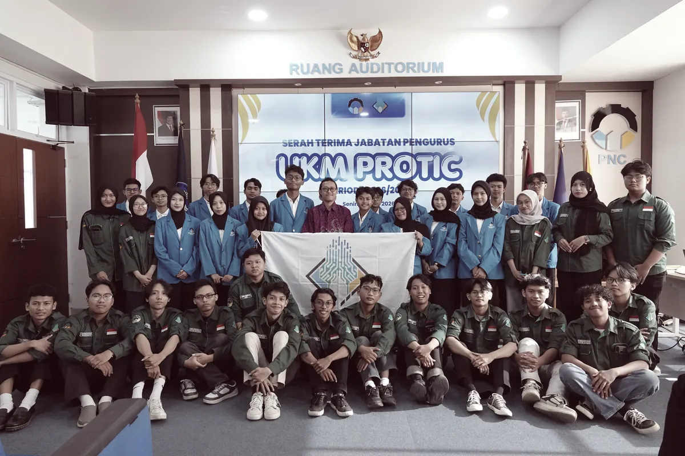

"About Us"
Protic atau Programming Technology Informatics Club merupakan Unit Kegiatan Mahasiswa yang mewadahi minat dan bakat mahasiswa Politeknik Negeri Cilacap di bidang pemrograman.
DIVISI
Protic terdiri dari dua divisi utama yaitu Divisi Teknikal dan Divisi Non-Teknikal. Kedua divisi ini saling berkolaborasi dalam mendukung jalannya program dan kegiatan, memastikan setiap aspek organisasi berjalan sesuai dengan visi dan misi yang telah ditetapkan.
Technical
Mengembangkan dan memelihara situs web/aplikasi
Riset
web technology
Memastikan desain situs web responsif
Research kebutuhan pengguna web/aplikasi
Desain
tampilan web/aplikasi
Merancang wireframe dan
prototype
Pengembangan aplikasi di platform Android/IOS
Pengembangan
aplikasi cross-platform
Pengolahan big data
Riset dan pengembangan AI
Data
mining
Pengelolaan infrastruktur IT
System administration
Managemen
project deployment
Non-Technical
Mengelola korespondensi, jadwal, dan dokumentasi
Menyiapkan
notulensi rapat dan laporan
Mengelola keuangan, termasuk pencatatan pemasukan dan
pengeluaran
Membuat laporan keuangan rutin
Mengelola komunikasi internal dan eksternal
Membangun
dan menjaga citra positif organisasi
Mengelola platform komunikasi, seperti media sosial dan
situs web
Membuat dan menyebarkan informasi